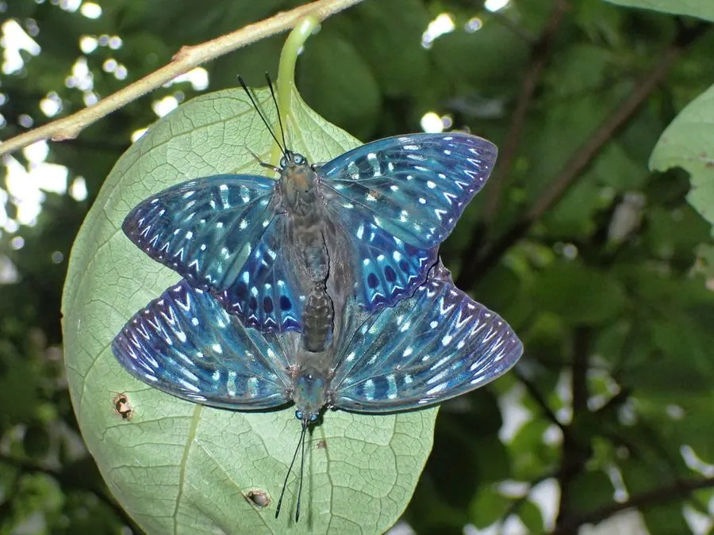

昆虫 · 动物界
电蛱蝶 Dichorragia nesimachus

翅面黑褐色、饰有青蓝色闪光带的中型蛱蝶，停歇时像一片枯叶，中国南方至东南亚的山地森林常见。
- 分类
- 门节肢动物门纲昆虫纲目鳞翅目科蛱蝶科属电蛱蝶属
- 栖息环境
- 山地常绿阔叶林、林缘与沟谷，清风藤等植物附近
- 地理分布
- 中国南方、东南亚和印度等地
- 保护级别
- 暂无评估
物种志
电蛱蝶翅展约 6–7 cm，雄蝶翅面黑褐色，前翅和后翅中央有一条青蓝色或紫蓝色的闪光带，在光线下像电光一样明亮，因此得名；雌蝶翅面偏黑，青蓝色带较窄。翅腹面有褐色和白色的复杂斑纹，停歇时像一片枯叶。
它生活在山地常绿阔叶林、林缘和沟谷，成虫飞行迅速，喜欢吸食树液、腐果汁液和花蜜，也常到湿地吸水。雌蝶把卵产在清风藤等植物的叶片上，幼虫取食叶片，身体带刺毛。电蛱蝶分布于中国南方、东南亚和印度等地，是山地森林中较常见的蛱蝶之一。它的青蓝色闪光带在密林的光线下时隐时现，是辨认它的重要特征，也是森林生态摄影中受欢迎的对象。
形态与习性
- 食性成虫吸食树液、腐果汁液和花蜜
- 翅展约 6–7 cm
- 识别黑褐色翅面有青蓝色闪光带
- 拟态停歇时像一片枯叶
- 分布中国南方、东南亚和印度
趣味知识
- 电蛱蝶翅面的青蓝色带在光线下像一道电光，因此得名。
- 它停歇时翅腹面的花纹像枯叶，很难被天敌发现。
- 电蛱蝶喜欢吸食树液和腐果汁液，常停在树干上。